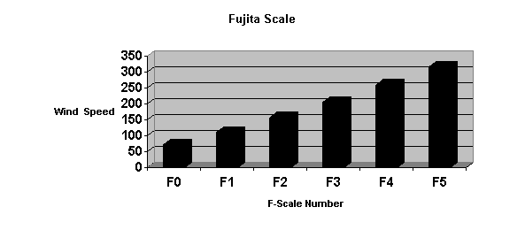
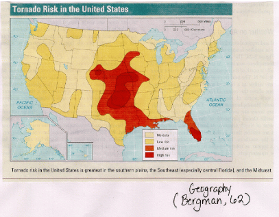
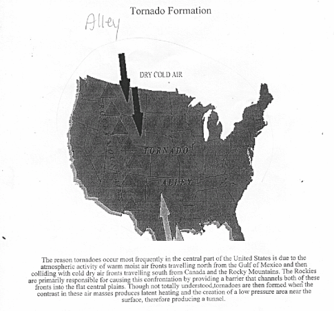

Article # 1
Tornadoes: Type, Cause, and Effect


A6: Physical Geography: Tornadoes
“Tornadoes: Type, Cause, and Effect”
By Chad Hearne, Terri Steimel, Glenda Johnson, and Chris Jaquez (The City Twisters)
Principles of Geography: Geog 1305, Section 2622
Prepared: October 10, 2000
What are the formations, types, damages, and paths of tornadoes in Arkansas?
A tornado drops from the sky and suddenly lives are torn apart. Trees rip from the earth with ease. Houses turn upside down within seconds! Hopes and futures are demolished. What is a tornado? How are tornadoes measured and formed? Does Arkansas have to worry about tornado threats? A tornado is a circulation of winds that is faster in destruction than any other storm. Each tornado is measured by strength on a scale known as the Fujita Scale. Arkansas, including Conway, is in Tornado Alley, the path across the United States that tornadoes are most commonly formed.
“Tornadoes are violent rotating columns of air that are in contact with the ground and originate in thunderstorms.” This is the general and widely used description of a twister. Tornadoes are often coined as twisters because of the rotation of wind that creates a funnel (Weather). A tornado is also defined as a wind tunnel that exists when moist, warm air gets trapped beneath a stable layer of cold, dry air by an intervening layer of warm, dry air. Thunderstorms are the first step in the making of a tornado. The thunderstorms can produce several tornadoes with other criteria. There are three key factors required for a thunderstorm to form. One condition is moisture in the lower to mid level of the atmosphere. Next, unstable air, or air that continues to rise once it begins traveling upward from near the ground, helps elevate possible tornadoes. The third is a lifting force causes the air to rise. The most common lifting force is warming of the air near ground level. Warm air is light and always rises. A cold front of cool air forces warm air upward and thunderstorms develop (Weather).
Therefore when all three of these conditions are produced the air will rise high into the sky creating an updraft. As the air rises, it cools and the moisture in it begins condensing to form a cloud. When the lifting force is strong enough, and the air contains enough moisture, the cloud can tower more than 50,000 feet into the air, carrying it upward at more than 100 miles per hour. Raindrops and hail form inside the thunderstorm due to the moisture dropping in temperature as it moves upward into the atmosphere (Edwards). The sky appears green to onlookers because of the dust and debris that have collected in the anvil, the upper portion of a storm.
The strongest thunderstorms normally form in humid air that is east or south of on-coming cold air. A southward, low-level jet of warm air 3,000 to 5,000 feet above the ground energizes the thunderstorms that can eventually create tornadoes. Also dry wind from the southwest helps add power to thunderstorms. Finally, the extremely dangerous sorts of thunderstorms are supercells, which are likely under the area where jet stream winds are speeding-up. This helps pull air upward, increasing the thunderstorm’s strength. Tornadoes form in the air that’s ascending into a thunderstorm. Tornadoes take the shape of a funnel. Many have a “…mist around them while others have many subvortices working around them (Weather).” However, the strongest tornadoes are often near the edge of the updraft, not far from where the air is actually descending from the thunderstorms. Falling rain or hail pulls down air to form what is known as a downdraft. This is why a burst of heavy rain often hits immediately before a tornado. Since the tornado is in rising air, wind is flowing in from the surrounding air, increasing the tornado’s energy. A tornado can generate up to one billion watts of kinetic energy (Weather). This means that damaging winds can hit hundreds of yards from the actual tornado vortex. These are known as subvortices (Edwards).
Weather forecasters, emergency management officials, and the public need to be aware of how tornado climatology affects the world. It is crucial for people to comprehend the threat of tornadoes in the United States. A process has been developed to classify the location of tornado touchdowns. This conversion is complicated, but it is the best form climatologists currently have. The chance of a tornado hitting any certain square mile of land is about once every thousand years on average, however this varies around the country. This cannot be an exact number because climatologists do not have an extended or accurate enough record on tornadoes to make certain narrow calculations.
Touchdown patterns are usually sporadic in nature, so there is no such thing as a “skipping tornado.” A tornado must be in contract with the ground to be considered an actual twister. Therefore when the vortex is not on the ground, it is no longer a tornado. Even if the same vortex makes contact with the ground later, it is considered a separate, individual tornado. A tornado can destroy one house and leave the next virtually unharmed (Edwards).
Every tornado formed has its own unique defining characteristics. Whether it is the speed of the winds or the shape of the funnel, they are all classified in some distinctive way (“Stormfax”). The Fujita Scale measures each tornado. The Fujita Scale is based on damage, not the appearance of a funnel. An “F” followed by the appropriate number, from 0 to 6, represents each level of the Fujita Scale (“Tornado Project”).

An F0 is characterized as a gale tornado, causing some damage to chimneys and tree limbs. It also has the ability to push over shallow-rooted trees and damage billboards. An F1 tornado is distinguished as a moderate tornado. The lower limit of the tornado is the beginning of hurricane wind speed. This type of tornado can peel surfaces of roofs, and even push mobile homes off foundations. These tornadoes like the F0, are very common. The F2 tornadoes can cause considerable damage. Roofs can be torn off frame houses, mobile homes can be demolished, and boxcars can be pushed over (“Tornado Project”). This is one of the most common tornadoes in Tornado Alley. An F3 is characterized as a remarkably severe tornado. These tornadoes can cause roofs to be torn off well-constructed houses, trains to be overturned, and forest trees to be uprooted. These are some of the most devastating tornadoes that hit heavily populated and industrialized areas. Structures with weak foundations can be blown off to great distances, and cars can be thrown even farther. These tornadoes are less common than the other previously mentioned types, but are still seen throughout the United States, including Arkansas (“Stormfax”). In the F4 tornado, strong-framed houses are lifted off foundations and carried considerable distances. This tornado was seen at the end of the popular movie “Twister.” The last level of the Fujita Scale is a F5 tornado with an inconceivable aftermath. The small area of damage they might produce can probably not exist. If this level is ever achieved, evidence for it might only be found in some manner of ground swirl pattern, for it may never by identifiable through engineering studies (“Tornado Project”).
There are also six different styles of tornadoes. A dust devil can be formed in light wind, and is formed from wind caused by different temperatures of farm fields. A style known as a gustnado occurs along outflow boundaries. They are narrower and shallower than land spouts, Which are a horizontal sheer between boundaries causing a vortex sheet. With the correct sheer and instability, a land spout can be created. The third style is a hurricane-spawned tornado. It consists of rain bands in hurricanes that contain convection cells, similar to supercells. A supercell develops in the boundaries between a cold downdraft and a warm inflow, creating a kind of rolling funnel of wind. Lastly, a waterspout is, essentially, a tornado over water that stretches to the cloud base (“Stormfax”).
The damage caused by tornadoes ranges from small limbs being blown off of trees, to slight roof damage, to the complete destruction of homes. Depending on the intensity of the twister, a group may experience only the frustrations of having to clean up debris from their yard, or the horror of having to rebuild their lives. Even worse is the loss of life that sometimes accompanies these monster storms. Tornadoes rip through farmland destroying farmhouses, fence rows, and ruining crops. It gets even worse when they hit cities. The damage estimates rise to the millions, and the death tolls often increase as well (“Stormfax”). The vertical winds of tornadoes can be powerful enough to pick up heavy objects such as the large, flat sides of walls or roofs. If the object is lightweight it can be carried thousands of yards. Though heavy objects usually are carried a short distance, paper objects can be carried thousands of miles (Edwards).
Tornadoes also cause environmental damage. By assessing a repot on May 12, 1999 from the sate of Oklahoma, it can be determined that if tornadoes hit places that contain hazardous chemicals these materials can be distributed into the environment. They not only contaminate the immediate surroundings, but also have the ability to carry toxins great distances through the air. They can also carry diseases found in soil to other places. This causes a wide state of concern. Not only chemical toxins, but also a more general topic is concerns ecologists. The natural world is destroyed by these natural disasters. Ecologists are interested in the “fluid, on going” system that nature truly is. “The change in climate, nutrient cycles, and the influx and departure of species” is something tornadoes influence greatly over time. The effects of tornadoes cause ecologists to ponder exactly how nature and forests have changed throughout the centuries. Over a 300-year period 20-40% of nature was destroyed by tornadoes. This observation arouses the curiosity of many ecologists
(“Storm Damage”).
Tornadoes cause immense damage, not only physically, but mentally upon the survivors. The stress of losing property or a loved one can sometimes be more than a person can handle. On occasion the mental stress can be greater than the physical damage. This could lead to severe depression and health problems in the future. In addition to the clean-up crews, there are also support groups on hand after a tornado to help deal with the mental effects of the disaster.
Much of the data gathered shows low risk zones in the United States. Arkansas lies in the low risk, while Oklahoma and Kansas are high-risk zones. Although this is stated, Arkansas still remains in the path of Tornado Alley (See Figure 1). Tornado Alley is a common term used to describe the high tornado occurrence in part of the United States. This alley covers central Texas to Nebraska and Iowa then east to Arkansas. Warm, humid air, thunderstorms, and relatively organized storms feed tornadoes. The Gulf of Mexico supplies a large amount of warm wind and moisture that travels along the Rockies. These mountains in the western United States submit a layer of dry, cold air about 3000 feet above the ground heading south from Canada. The Rockies act as a wall keeping the air eastward. The cold air can sometimes travel to the ground and collide with the Gulf’s humid air causing severe storms. In the ideal setting, updrafts can develop forming supercells becoming tornadic at times (Cappella). The Rocky Mountains and the Appalachian Mountains force these fronts to remain in this channel-like area causing the sates between them to be in constant caution of possible tornadoes (Bergman, 62). Tornadoes most commonly take place in the spring and summer season and usually occur in the late afternoon or early evening. It must also be recognized that tornadoes can occur during any time of the year at any hour of the day (“Storm Damage”). (See Figure 2)
Arkansas lies in Tornado Alley; as a result many tornadoes occur each year. An example of a rather devastating tornado happened on April 21, 1996. According to Dave Hughes of the Arkansas Democrat Gazette, at about 11:00PM a F2 magnitude tornado raced through Van Buren and Fort Smith. It destroyed much of downtown Fort Smith, demolishing many homes on the north side before crossing over the river to Van Buren. When the devastating storm ended, four lives had been taken. The storm caused an estimated three hundred million dollars of damage in a stretch of six combined counties. According to the Red Cross Statistics, 435 homes and 60 apartments were destroyed in Van Buren. In the path of this phenomenon 660 homes were damaged. In the Fort Smith area the tornado took out 157 homes and damaged 1,350 homes (Hughes).
Over the years, Conway has experienced many tornadoes. One such occasion in 1965 a tornado occurred in Conway (See Figure 3). The tornado touched down near the southern city limits on Highway 65 and destroyed almost everything in its path northward toward the Arkansas Children’s Colony. None of the children were killed, and only about fifteen to twenty suffered injuries. However, many others were not so fortunate, six people were killed, and over one hundred people injured by this specific twister. Seventy-five homes were destroyed, and the storm left destruction estimated from 5 million to 10 million dollars (Schneider 1). This storm was an F3 magnitude tornado with winds as high as 200 mph (“Tornado Project”).
Mrs. Betty Osborn recalled the storm vividly, “ We could see insulation and other debris swirling in the air and falling back to the ground. It took a few minutes for us to realize how much destruction must be in the path of the tornado.” Mrs. Osborn continued to tell about people running into a church building for shelter, but after the tornado had passed over, the only thing left of the building was a concrete slab floor. Mrs. Osborn discussed about a friend, Jim Schneider, who miraculously survived the tornado with only minor injuries from underneath his bed (Osborn). The particular tornado was an F5, which has the strength to pick houses up and carry then a long-range distance, and suddenly drop the house (“Tornado Project”).
Mr. Schneider stated in the Log Cabin Democrat, “I am alive generally because I dived beneath my bed seconds before the room came crashing down on it, and specifically because my Creator, for a reason I’ll never question, decided it wasn’t my time yet.” Schneider went on to say that even after hours later he was still numb, and those who have stared into the horrible eye of that devastating, unbridled mass of energy knows what he means (Schnieder 1). The mental distress of a tornado is inevitable. Individual who experience a tornado of this momentum are cognitively haunted by its destruction.
It is amazing how a twister chooses what it will destroy. How can a man be left virtually unharmed under a bed while the house literally falls down around him? When a multiple-vortex tornado, or small single vortex tornado occur this jump seems to happen. A multiple-vortex tornado may only have enough power to do minor damage to a particular area. Yet, a smaller tornado may hit the area with speed of 200mph causing total destruction (Edwards). (See Figure 4)
More recently, on January 21,1999, another set of tornadoes hit Faulkner County. Fortunately for the residents, there were no lives taken (Magsam 1). One of the homes destroyed was the Janes’ home. Mullins, a cousin speaking on behalf of the Janes’ family, said the family saw the tornado bearing down on them. Since there was no time to make it to a nearby storm shelter, they took cover in the interior rooms of the home.
“He (Loyse Janes, Sr.) went into the bathroom with his grandson, and when the tornado got through they were in a thicket and Loyse still had a hold of the boy,” said Mullins (Magsam 1). This particular tornado damaged homes, farms, businesses, and left an impression on many lives. Conway has seen many tornadoes pass through because that it is clearly in the path of Tornado Alley. (See Figure 5)
Tornadoes are destructive, circulating forces of wind that range from slight misfortunes, an F1 tornado, to entire obliteration of an environment and the lives of the residents in this area, an F5 tornado. These random acts of nature are produced from the action of two opposing fronts battling each other. The United States has an abundance of tornadoes; however it has a specific area that seems to be overflowing with twisters, Tornado Alley. Unfortunately, Arkansas lies in the alley that has been geographically chosen to be a victim of frequent tornadoes. The types, causes, and effects of tornadoes are still being explored and discovered.
Works Cited
Bergman, Edward F. and William H. Renwick Introduction to Geography: People,
Places, and Environment. (1999) New Jersey: Prentice Hall, Inc.
Capella, Chris. “Tornado Alley.” USA Today. 8 Nov. 1999.
<http://www.usatoday.com/weather/wtoralley.htm>
“Chasers.” Arkansas Democrat Gazette. 25 Jan. 1999: A1+.
Edwards, Roger. Storm Prediction Center. Tornado FAQ about Tornadoes. 13 Sept. 2000 <http://spc.noaa.gov/faq/tornado/>.
Hughes, Dave. “Tornadoes Kill 4: Ravage Two Cities.” Arkansas Democrat Gazette.
23 Apr. 1996: A1+.
Magsam, John and Sarah Jordan. “Storms injure 7 in county.” Log Cabin Democrat 22
January 1999, A1+.
Osborn, Betty. Interview. Archives: Torreyson Library. University of Central
Arkansas. 18 May. 1965.
Schneider, Jim. “Cabin Reporter in Middle of Storm; Dives Under Bed.” Log Cabin
Democrat 12 April 1965, A1+.
“Storm Damage Report, Waste Management.” 12 Sept. 2000
<http://www.deq.state.ok.us/may99storm/WMDStormDamageReport5-12.htm>
Stormfax, Inc. Stormfax Weather Almanac. 12 Sept. 2000
<http://www.stormfax.com/fujita.htm.>.
The Tornado Project. The Fujita Scale. 6 Sept. 2000.
<www.tornadoproject.com/jujitascale/jscale>.
Weather.Com. “Tornadoes.” 6 Oct. 2000.
<http://www.weather.com/encyclopedia/tornado/form.html>

